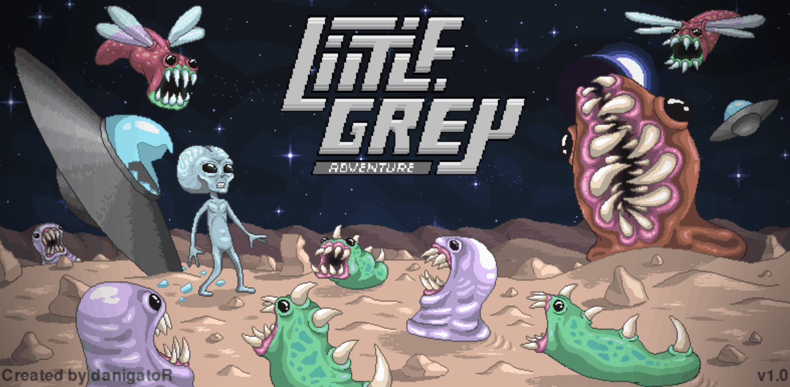

Desarrollador de juegos 2D

Little Grey Adventure is a fast-paced 2D endless runner where the player controls a small grey alien trying to survive in a hostile environment. As the game progresses, the alien moves forward automatically while the player must react quickly to avoid incoming threats. Obstacles such as falling rocks and hostile creatures appear dynamically, requiring precise timing and decision-making. The player can jump to avoid ground obstacles or duck to evade low-flying enemies, adding an extra layer of depth to the gameplay. The challenge lies in surviving for as long as possible while the difficulty gradually increases. The longer you last, the higher your score climbs, encouraging players to improve their reflexes and beat their previous high score.